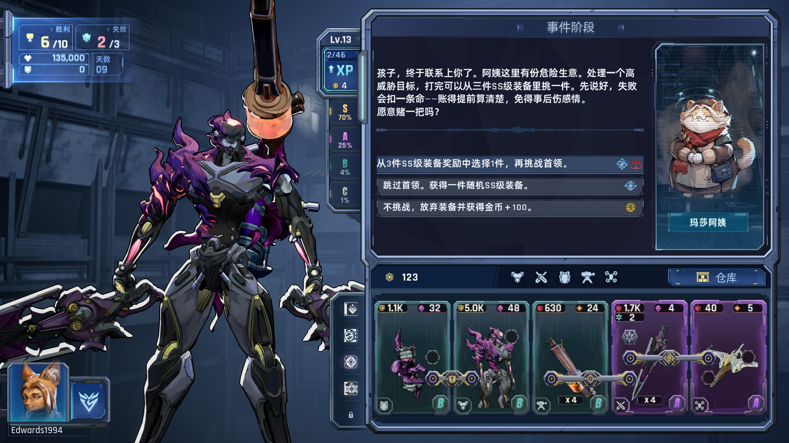

返回工作流首领失败扣命提示与玩家说明冲突
BUG-009 · 候选文案问题，尚未实测失败结算。Windows Steam Demo 1.0.0.2218，第四局第9天，2026-11-16。
高危首领事件文案明确写“失败会扣一条命”。当前6胜2负、最后生命，AI据此选择了“跳过首领，获得一件随机SS级装备”。随后用户明确纠正：“首领输了不掉命，下次你就知道了”。
证据边界：截图证实扣命文案；不掉命来自玩家先验。本轮尚未亲自进行首领失败结算，因此不能把实际扣命或不扣命标为已实测。
后续核对：下次首领按用户说明参与，记录战前失败数、战后结果与失败数；若失败不增加次数，确认该文案应改正。当前不为复现故意送掉本局。

同屏有6胜2负及首领选项，文案位于事件正文。